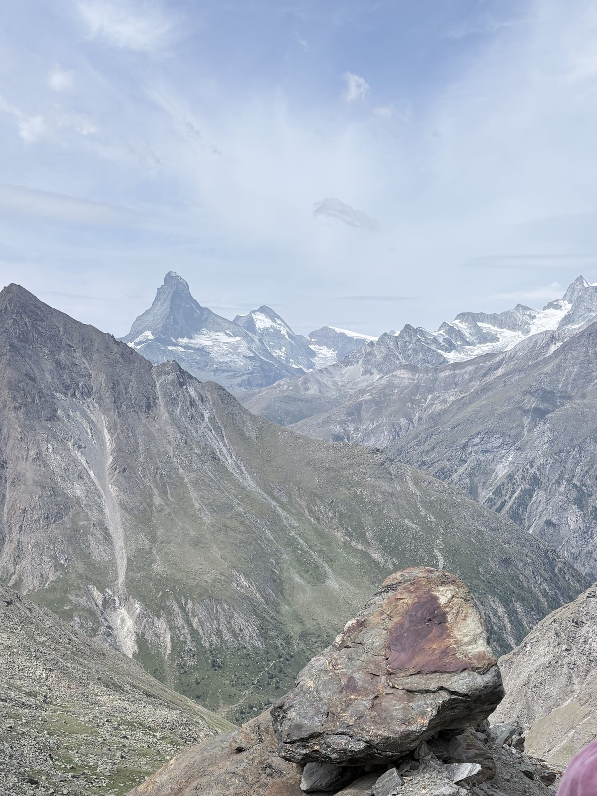
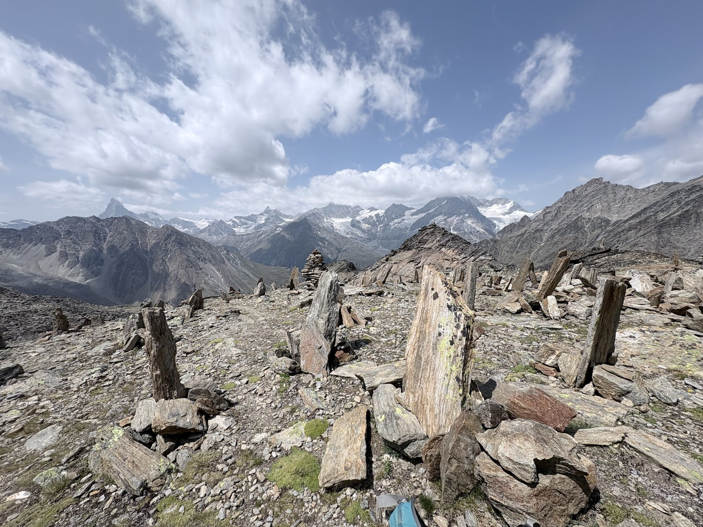
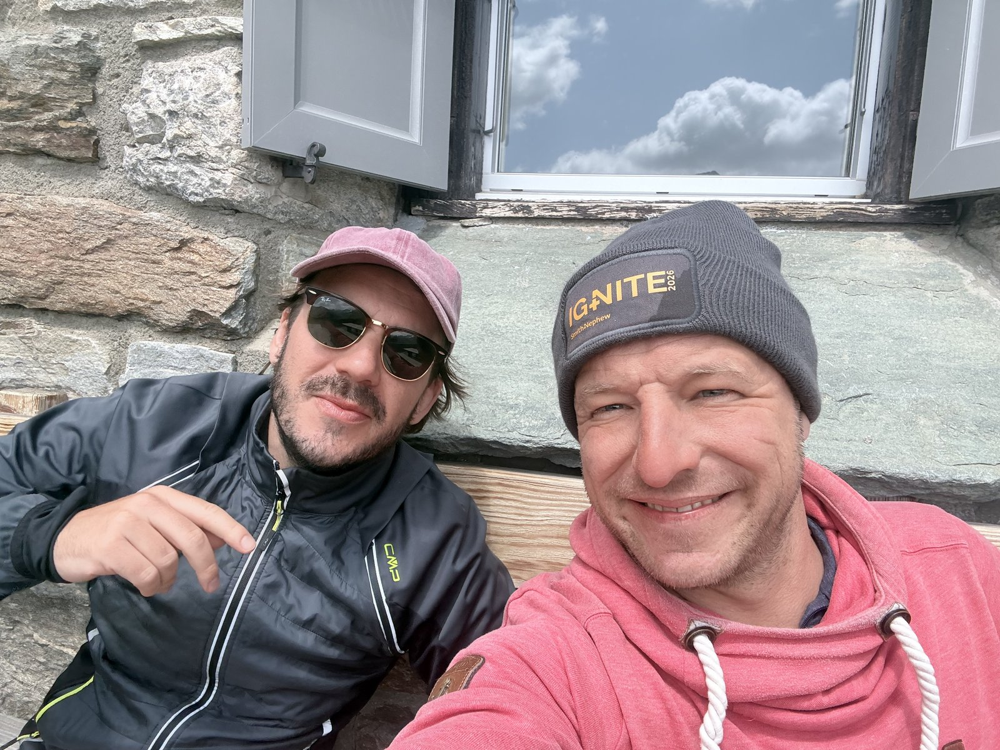
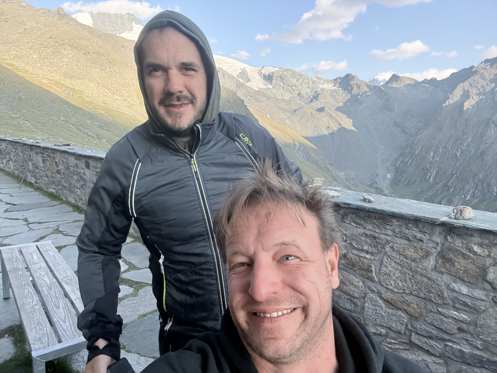
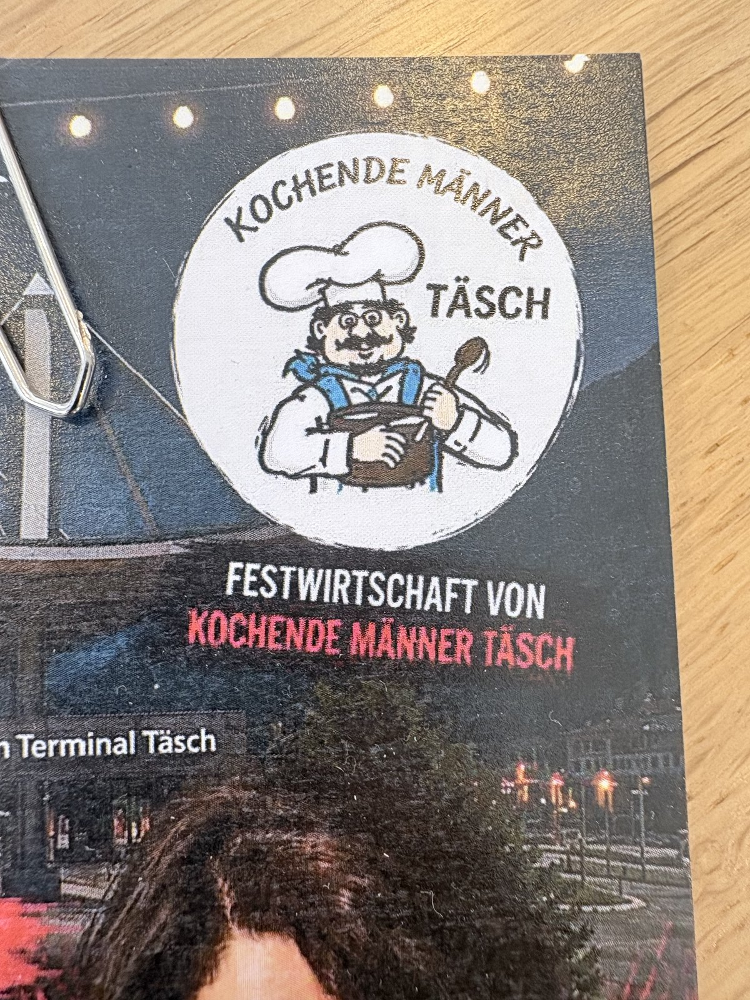

The plan was a detour: from the Europahütte down to Täsch, by bus up to Täschalp, and on foot onward to the Täsch Hut (18.2 km, 9:10 h, 1,950 m of ascent, 1,514 m of descent). We deviated instead and walked straight over the Weingarten Glacier – a high-alpine alternative that skips the detour through the valley, but is noticeably steeper. Around two hours longer than the plan, but by our own judgement thoroughly worth the extra time: very steep, but beautiful.
Across the Weingarten Glacier: Instead of the detour through the valley, the route leads straight across glaciated high-mountain terrain – wild rock and ice scenery, far from the valley trails used by other hikers. The effort pays off with every view.

In the middle of the glacier crossing – nothing but rock, ice and ridges all around, not another hiker in sight.
Highest point with a view of the Matterhorn: At the highest point of the crossing sits a bizarre cluster of stone slabs standing on end – whether trail markers or simply the work of bored hikers remains an open question. The view reaches as far as the Matterhorn, pushing through the clouds on the horizon to the left.

Rock formations at the highest point – and far to the left on the horizon, small but unmistakable, the Matterhorn.
Arrival at the Täsch Hut: After the long descent from the high point we reach the Täsch Hut (2,701 m) – two hours later than planned via the valley route, but with impressions that thoroughly justify the detour.


Arrived at the Täsch Hut – worn out, but very happy with the detour.
A curiosity at the hut: A notice for the “Kochende Männer Täsch” (Cooking Men of Täsch) hangs at the Täsch Hut – a festival restaurant association you really wouldn't expect up here. No connection to today's route, just a funny find along the way.

Found at the hut: the guest card of the “Kochende Männer Täsch” – whatever that's for.